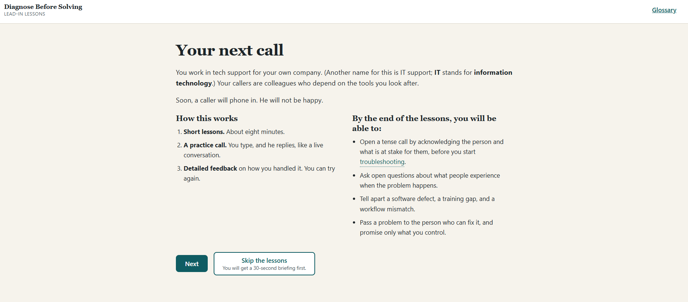

Instructional Designer and E-Learning Developer
I turn complex topics into training that people understand and actually use. Instructional Designer open to roles in the Baltimore, MD area (hybrid or flexible), with nearly 20 years of designing, facilitating, and assessing learning.
Career highlights
- Trained 30 staff on a new LMS; 100% met adoption benchmarks most schools missed
- Built scenario-based training and microlearning in Articulate Storyline 360 and Rise 360, plus a custom AI-driven simulation
- Run needs analysis and write ABCD objectives using ADDIE, Bloom’s Taxonomy, and Gagné’s Nine Events
- Led 125 learners per year across multi-cohort programs, improving program retention by 70%
- Mentored 5 new teachers, leading to 100% “Highly Effective” ratings over 3 years
Core skills: Instructional Design, Needs Analysis, ADDIE, Scenario-Based Learning, Microlearning, Curriculum Development, Adult Learning Theory, Canvas LMS, Facilitation
If your team needs training that is clear, engaging, and tied to business goals, message me or email: bacon.davidj@gmail.com

Featured Project
Diagnose Before Solving: An AI Practice Call for Tech Support

PreviewA short lead-in training followed by a live practice call. Learners play an internal tech support specialist taking a call from Marcus, a regional sales lead who is angry and certain a CRM update broke his team's numbers. They type their own responses, Marcus replies in real time, and the call ends with scored feedback that quotes what they actually said. To pass, learners have to acknowledge what the problem is costing him, ask what his reps experience, name the real cause, and route it to the person who can fix it.
I designed the learning experience, the five-criterion rubric, and the prompts, wrote a 92-test plan before the build, and directed an AI coding assistant through the application build. The character and the assessor are separate models, the code does the scoring arithmetic, and hard spending limits fall back to a recorded demo call, so a visitor always sees a working piece. The case study and decision log record the reasoning behind each choice, including the reversals.
Nine more design documents
More Projects
 Preview
Preview
The First 90 Days: Onboarding New Managers
A sequenced microlearning program that walks newly promoted managers through the three conversations that define their first 90 days: setting expectations their team can act on, delivering feedback that addresses behavior without attacking character, and building communication rhythms that surface problems early. Each module pairs a taught framework with two branching scenarios and a downloadable job aid, so learners rehearse the decision before they face it at work.
I designed the full program as a single ADDIE cycle: objectives written in Mager's ABCD format, cognitive demand sequenced across the three modules using Bloom's Taxonomy, and every module built on a shared architecture drawn from Gagné's Nine Events. The design document records the reasoning behind each of those decisions, including the revisions I made after reviewing my own draft.
 Preview
Preview
Difficult Conversations
An interactive branching scenario that helps new managers practice difficult workplace conversations. Learners guide Jordan, a manager, through a performance conversation with Alex, choosing responses that lead to success, soft failure, or escalation. The project focuses on feedback delivery, expectation-setting, tone, and supporting behavior change through realistic decision-making.
 Preview
Preview
Delivering Better Feedback
A short Rise-based learning experience exploring the difference between advice, criticism, and actionable feedback, with practical strategies learners can apply immediately.
About Me
I spent 19 years designing and leading learning experiences in public education, building repeatable systems that helped learners develop skills, respond to feedback, and improve performance over time. That work shaped my approach to instructional design: learning should be practical, realistic, and built around what people actually need to do.
My current portfolio focuses on scenario-based learning, leadership development, AI-supported simulations, and performance support resources. I'm especially interested in designing scalable learning systems that help employees communicate clearly, adopt new processes and tools, and navigate challenging workplace situations with confidence.
Contact
If you'd like to learn more about my work or connect, I'd be glad to hear from you.